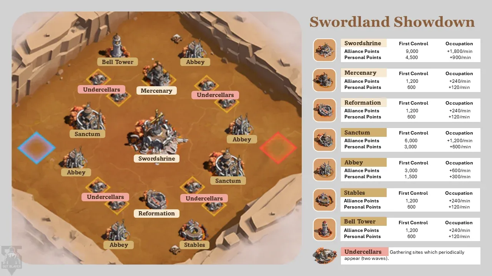

Swordland watcher sheet
For Marsman. Everything here follows the strategy and the group page. Calls in blue, decisions in red, blanks are yours to fill.
Reserves (fill in before Saturday)
If an anchor is missing at the roll call, the reserve takes their building. Write a name next to each.
- Filip (Swordshrine):
- Ms_Golden_Marvel (Sanctum):
- LadyGraham2000 (near Abbey):
- Aly (far Abbey):
- Stormy_Knight (buff building):
- Wolverine / Dr BiskStrange (rally leaders):
- First four rally joiners:
Before the match
- Saturday: post tinyurl.com/gldgroups and the time in UTC and local times in alliance chat (and the Legion 1 group chat if there is one).
- Saturday: put the time as a label above your own town.
- Sunday, 60 min before: reminder in chat: marches home, infirmary empty, no gathering, boosts on, defence hero in slot 1 for garrison people.
- 30 min before: battlefield chat exists. Post the group page link and the four words there.
- 10 min before: roll call in battlefield chat. Tick who answers: anchors first.
- Absent anchor: post the reserve's name and building.
- Castle appointment (healing boost): Strike member for 7:00 to 7:30 , for 7:30 to 8:00 .
- Own setup: full map open, pen and this sheet, clock visible.
- Own points: at 0:00 send one march from the safe zone into our Sanctum and leave it there all hour; it earns while you watch.
Roll call
| Group | Names (strike through who is missing) |
|---|---|
| Centre | Filip, Gamma_RADiation, Tanaris, LESTAT St W, b1ackbyte, Scyco, Lothar |
| Home 1 Sanctum | Ms_Golden_Marvel, ElpanditoVonDoom, DeimnSon, Abdullah, Jack Sparow |
| Home 2 near Abbey | LadyGraham2000, Copetain America, Da Nxked Chef |
| Home 3 far Abbey | Aly, Bash, Leeroy5 |
| Home 4 buff | Stormy_Knight, Fabled Hero, Chyoz |
| Strike | Wolverine, Dr BiskStrange, Bahaa |
| Looters | Dustin333, Matrix, Olivia1, Ted |
| Substitutes | durzo, Honey, Ghost Rider, Swqa, DomGordo, Leo_toooooooot, Urmel, Tony, Venom Goo |
The map
From the Kingshot Wiki. Blue half: Bell Tower, one Sanctum, two Abbeys. Red half: Royal Stables, one Sanctum, two Abbeys. Swordshrine, Mercenary and Reformation open at 15:00.

The hour
0:00
- Open the full map. Which corner are we? Our half has either the Bell Tower or the Royal Stables.
- Post: "We are [left/right]. Our buff building is the [Bell Tower / Stables]."
- Post: TAKE Sanctum, TAKE Abbey near, TAKE Abbey far, TAKE [buff building]. If the Stables are on the enemy half: "Strike: Stables."
- Write down: teleport timer on the button , speedups at start .
3:00
- Are all four of ours captured? Note the capture countdown you saw: min.
- Substitutes enter now if a fighter is missing. Check the roll call: each substitute takes the missing fighter's group. Post: "[substitute]: you are in [group], march to [building]."
- Decide: any of our four not taken? Post GARRISON [building]; the other Home groups send their spare marches there.
3:00 to 14:00
- Strike scouts the enemy half and tells you where their anchors parked and how many cities sit at their near Abbey.
- Decide: enemy near Abbey lightly held? Strike burns the cities beside it, Home 3 sends a march in. Otherwise Strike waits.
- Centre (Filip, Gamma_RADiation) guards the Home buildings: post "Filip/Gamma: [building]" when an enemy attacks one. If the Stables are on the enemy half, they go with Strike.
- Watch for enemy marches at our buildings. Post: GARRISON [building] the moment one shows.
- Write down march times from the safe zone (ask one joiner per building to tell you): see the log below.
13:00
- Decide: is our half secure enough to go for the shrine at 15:00? Yes: post "Centre joiners (Tanaris, LESTAT St W, b1ackbyte, Scyco, Lothar): recall your march from the Home building now, main march ready for the shrine." No: they stay where they are.
- Post: "Filip, Gamma: to the shrine, one screen away." Their main marches must be back and full by 15:00.
14:30
- Decide: is our half secure (all four held, no rally incoming)? Yes: post "RALLY Swordshrine at 15:00, Filip main march, Centre joiners GARRISON on his call. Strike: into the shrine until it holds." No: the shrine is left alone until late.
- If the enemy also goes for the shrine: Strike burns the enemy cities parked next to it, not the garrison.
15:00 to 20:00
- Post: COLLECT Undercellars (looters, a few troops per march).
- Once the shrine holds: Gamma_RADiation takes the Hall of Reformation. Mercenary Camp only if nobody is near it.
- Strike swap around now if teleports are used up: name the replacement first.
20:00 to 45:00
- Nobody leaves a building held since 3:00 (the 30-minute bonus starts at 33:00).
- Strike member low on troops? They use the free healing speedups inside the field first; if they must leave, they say so in chat and the other two carry on for 12 minutes. Nobody leaves after 35:00. Anchors never leave.
- Every time one of our buildings flips: post COLLECT [building] at once.
- An enemy anchor teleported away? Their building is open: post TAKE [building] for the nearest group.
- Second Strike swap around 30:00.
45:00 score check
- Write the score: us them .
- Ahead by more than about 30,000: keep every garrison full, no trading, looters watch for flips.
- Behind: name the enemy building they have held longest (biggest loot bank) as the 50:00 target.
- Two or more enemies clearly stronger than Wolverine and the match out of reach: switch to personal points: everyone holds what can be held, loots and gathers; nobody sits idle.
50:00
- Post: "RALLY [target], Wolverine first, Dr BiskStrange 10 seconds after. Everyone not anchoring joins. Looters COLLECT when it flips."
55:00 to 60:00
- Post: "Last flips. Take the weakest enemy building. COLLECT everything."
- Captures that finish in the last seconds count.
Building tracker
Write O (ours), E (enemy) or – (empty) at each check.
| Building | 5:00 | 15:00 | 30:00 | 45:00 | 55:00 | end |
|---|---|---|---|---|---|---|
| Our Sanctum | ||||||
| Our near Abbey | ||||||
| Our far Abbey | ||||||
| Our buff building | ||||||
| Swordshrine | ||||||
| Hall of Reformation | ||||||
| Mercenary Camp | ||||||
| Their Sanctum | ||||||
| Their near Abbey | ||||||
| Their far Abbey | ||||||
| Their buff building (Strike at 0:00 if it is the Stables) | ||||||
| Score us / them |
Measurement log
These are the numbers the plan rests on that no source could confirm. Fill in what you see; each one changes match two.
| Measure | Seen | Why it matters |
|---|---|---|
| March time, safe zone to our Sanctum (with speedups) | can safe-zone joiners save a contested building | |
| March time, safe zone to our near Abbey | ||
| March time, safe zone to our far Abbey | ||
| March time, safe zone to the Swordshrine | can Centre joiners arrive for 15:00 | |
| March time, safe zone to their Sanctum | can it ever be a starting target | |
| Time for a safe-zone joiner to reach a Strike rally | rally fill speed | |
| Teleport cooldown on the button; after we hold the Stables | 10 or 12 min; Strike's rhythm | |
| Speedups at start; the cap | expected 5 and 30 | |
| Capture countdown; with the Bell Tower | 3 or 2 min | |
| Sanctum points per minute shown on its panel | expected 1,200 / 600 | |
| Who gets a building's per-minute personal points: everyone inside, the anchor only, or by troop share | is "sit in a building" a real role | |
| Loot dropped on a flip vs the bank shown above the building | half or all | |
| When one of our parked cities burns, do its troops leave the building | does Strike's burning work; are our safe-zone garrisons unbreakable | |
| Can a city teleport back into the safe zone | can a tired anchor retreat | |
| Which four joiners' skills a rally counted (first four, or highest) | join-order rule | |
| Undercellar points per gather; personal tier thresholds on the rewards tab | sizes the 180k target |
After the match
- Screenshot the final score and the Battle Results screen.
- Post the measurement log in officer chat.
- Note who registered and did not show.
- Three questions for the debrief: did the safe-zone marches arrive in time; did the shrine hold; did the 50:00 rallies fill.